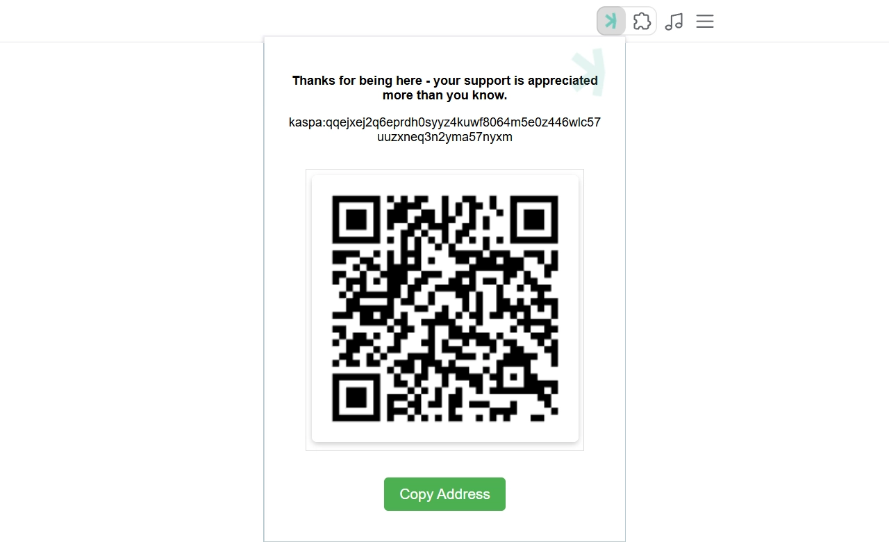

Kaspa Donations Extension

What is Kaspa Donations?
Kaspa Donations is a browser extension for Chromium-based browsers (such as Chrome, Brave, Edge, and Opera) that makes it easy to donate Kaspa cryptocurrency to participating websites and authors. Simple and direct!
What is Kaspa?
Kaspa is the fastest, most scalable proof-of-work cryptocurrency, utilizing a BlockDAG-based distributed ledger technology and the energy-efficient kHeavyHash algorithm to deliver sub-second block times, high throughput, and robust decentralization. Learn more at kaspa.org.
I own a website. How to accept Kaspa Donations?
Simply add Kaspa meta tags to the <head> section of your HTML using this format:
<meta name="kaspa:wallet" content="YOUR_KASPA_WALLET_ADDRESS_HERE" />
<meta name="kaspa:title" content="YOUR_MESSAGE_HERE" /> (optional)
Extension will detect these tags and display your donation info to users. You can specify a Kaspa address for your entire site, set different addresses per page, or even assign addresses to individual article author - it’s up to you!
Who Is Accepting Kaspa Donations?
These websites are now accepting Kaspa donations from their visitors:
Privacy
If you’re concerned about privacy, rest assured: Kaspa Donations is fully open source, just like all our projects. It’s lightweight, simple, and runs locally on your device. You can review the code anytime on GitHub. Learn more in our Privacy Policy.
